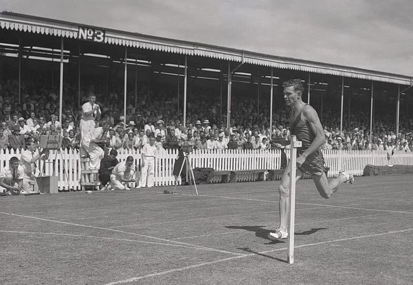

Sir Peter George Snell
New Zealand Sports Champion of the 20th Century

Peter Snell breaking the 800m World Record at the
AGFA Athletic meeting in Christchurch, New Zealand in
February 1962.
Photograph cropped from Archives New Zealand and reused under Creative Commons Attribution 2.0
Peter Snell is still recognised as New Zealand's greatest Olympian with his golden double in the 800m and 1500m set in Tokyo in 1964. His New Zealand 800m record set in 1962 still stands.
The great Lord Sebastion Coe, himself a winner of four Olympic medals and eight world records in middle-distance running, said of his friend:
Sir Peter was a giant of athletics by any standard, in any era.
Some import milestones in an extraordinary life
- 1938 - born in the small North Island town of Opunake.
- 1960 - wins 800m at the Rome Olympics.
- 1962 - sets world records for the mile (3:55.4) and the 800m (1:44.3) both on grass. Wins gold in the mile and 880m (setting a new record) at the Commonwealth games in Perth.
- 1964 - wins Olympic double (800m/1500m) at the Tokyo Olympics. Betters his existing mile record with a time of 3:54.1.
- 2003 - becomes US over-65s orienteering champion.
- 2007 - knighted, and a statue (of himself) erected in Whanganui, where he broke the world mile record in 1962.
- 2017 - competes at the World Masters Games in Auckland, in singles, mixed doubles and wins a silver medal in a team event.
- 2019 - dies at the age of 80.